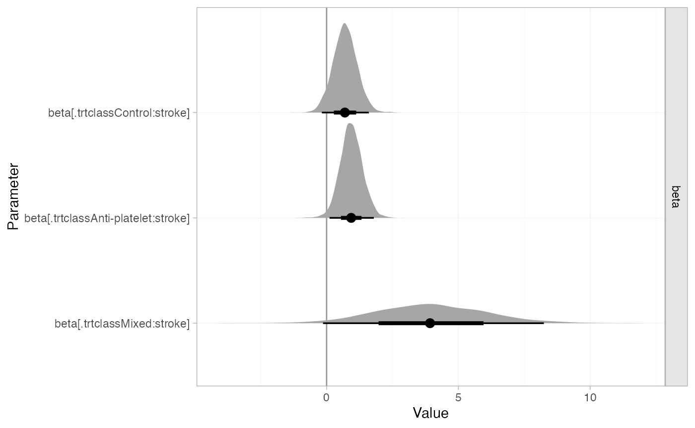
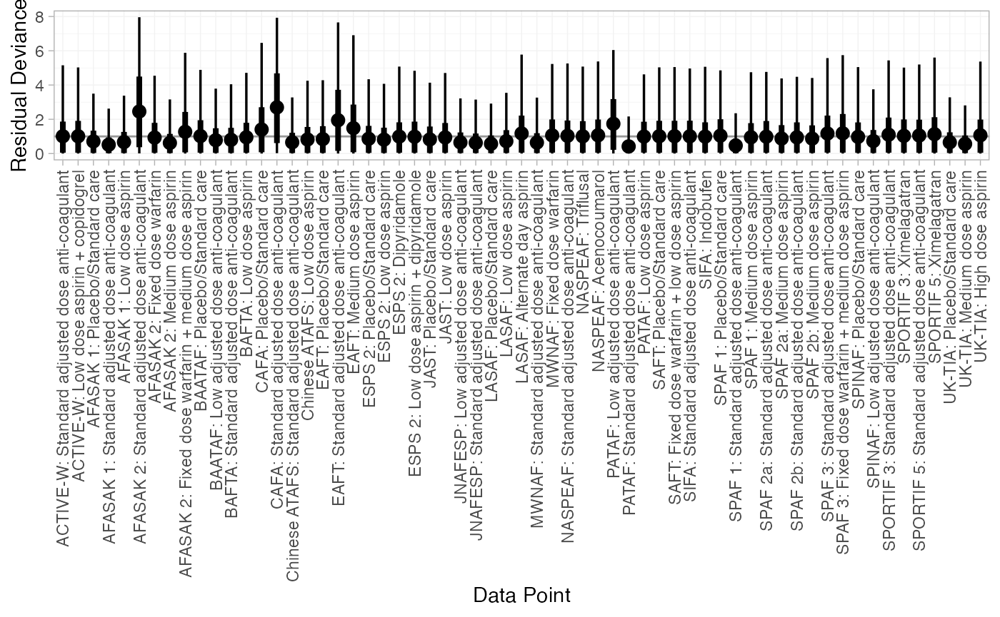

Example: Atrial fibrillation
Source:vignettes/example_atrial_fibrillation.Rmd
example_atrial_fibrillation.Rmd
library(multinma)
options(mc.cores = parallel::detectCores())#> For execution on a local, multicore CPU with excess RAM we recommend calling
#> options(mc.cores = parallel::detectCores())
#>
#> Attaching package: 'multinma'
#> The following objects are masked from 'package:stats':
#>
#> dgamma, pgamma, qgammaThis vignette describes the analysis of 26 trials comparing 17 treatments in 4 classes for the prevention of stroke in patients with atrial fibrillation (Cooper et al. 2009). The data are available in this package as atrial_fibrillation:
head(atrial_fibrillation)
#> studyc studyn trtc trtn trt_class r n E
#> 1 ACTIVE-W 1 Standard adjusted dose anti-coagulant 3 Anti-coagulant 65 3371 4200
#> 2 ACTIVE-W 1 Low dose aspirin + copidogrel 16 Anti-platelet 106 3335 4180
#> 3 AFASAK 1 2 Placebo/Standard care 1 Control 19 336 398
#> 4 AFASAK 1 2 Standard adjusted dose anti-coagulant 3 Anti-coagulant 9 335 413
#> 5 AFASAK 1 2 Low dose aspirin 5 Anti-platelet 16 336 409
#> 6 AFASAK 2 3 Standard adjusted dose anti-coagulant 3 Anti-coagulant 11 170 355
#> stroke year followup
#> 1 0.15 2006 1.3
#> 2 0.15 2006 1.3
#> 3 0.06 1989 1.2
#> 4 0.06 1989 1.2
#> 5 0.06 1989 1.2
#> 6 0.10 1998 2.2Cooper et al. (2009) used this data to demonstrate meta-regression models, which we recreate here.
Setting up the network
Whilst we have data on the patient-years at risk in each study (E), we ignore this here to follow the analysis of Cooper et al. (2009), instead analysing the number of patients with stroke (r) out of the total (n) in each arm. We use the function set_agd_arm() to set up the network, making sure to specify the treatment classes trt_class. We remove the WASPO study from the network as both arms had zero events, and this study therefore contributes no information.
af_net <- set_agd_arm(atrial_fibrillation[atrial_fibrillation$studyc != "WASPO", ],
study = studyc,
trt = trtc,
r = r,
n = n,
trt_class = trt_class)
af_net
#> A network with 25 AgD studies (arm-based).
#>
#> ------------------------------------------------------- AgD studies (arm-based) ----
#> Study Treatment arms
#> ACTIVE-W 2: Standard adjusted dose anti-coagulant | Low dose aspirin + copidogrel
#> AFASAK 1 3: Standard adjusted dose anti-coagulant | Low dose aspirin | Placebo/Standa...
#> AFASAK 2 4: Standard adjusted dose anti-coagulant | Fixed dose warfarin | Fixed dose ...
#> BAATAF 2: Low adjusted dose anti-coagulant | Placebo/Standard care
#> BAFTA 2: Standard adjusted dose anti-coagulant | Low dose aspirin
#> CAFA 2: Standard adjusted dose anti-coagulant | Placebo/Standard care
#> Chinese ATAFS 2: Standard adjusted dose anti-coagulant | Low dose aspirin
#> EAFT 3: Standard adjusted dose anti-coagulant | Medium dose aspirin | Placebo/Sta...
#> ESPS 2 4: Dipyridamole | Low dose aspirin | Low dose aspirin + dipyridamole | Place...
#> JAST 2: Low dose aspirin | Placebo/Standard care
#> ... plus 15 more studies
#>
#> Outcome type: count
#> ------------------------------------------------------------------------------------
#> Total number of treatments: 17, in 4 classes
#> Total number of studies: 25
#> Reference treatment is: Standard adjusted dose anti-coagulant
#> Network is connected(A better analysis, accounting for differences in the patient-years at risk between studies, can be performed by specifying a rate outcome with r and E in set_agd_arm() above. The following code remains identical.)
Plot the network with the plot() method:
plot(af_net, weight_nodes = TRUE, weight_edges = TRUE, show_trt_class = TRUE) +
ggplot2::theme(legend.position = "bottom", legend.box = "vertical")
Meta-analysis models
We fit two (random effects) models:
- A standard NMA model without any covariates (model 1 of Cooper et al. (2009));
- A meta-regression model adjusting for the proportion of individuals in each study with prior stroke, with shared interaction coefficients by treatment class (model 4b of Cooper et al. (2009)).
NMA with no covariates
We fit a random effects model using the nma() function with trt_effects = "random". We use \(\mathrm{N}(0, 100^2)\) prior distributions for the treatment effects \(d_k\) and study-specific intercepts \(\mu_j\), and a \(\textrm{half-N}(5^2)\) prior for the heterogeneity standard deviation \(\tau\). We can examine the range of parameter values implied by these prior distributions with the summary() method:
summary(normal(scale = 100))
#> A Normal prior distribution: location = 0, scale = 100.
#> 50% of the prior density lies between -67.45 and 67.45.
#> 95% of the prior density lies between -196 and 196.
summary(half_normal(scale = 5))
#> A half-Normal prior distribution: location = 0, scale = 5.
#> 50% of the prior density lies between 0 and 3.37.
#> 95% of the prior density lies between 0 and 9.8.Fitting the model with the nma() function. We increase the target acceptance rate adapt_delta = 0.99 to minimise divergent transition warnings.
af_fit_1 <- nma(af_net,
trt_effects = "random",
prior_intercept = normal(scale = 100),
prior_trt = normal(scale = 100),
prior_het = half_normal(scale = 5),
adapt_delta = 0.99)#> Note: Setting "Standard adjusted dose anti-coagulant" as the network reference treatment.Basic parameter summaries are given by the print() method:
af_fit_1
#> A random effects NMA with a binomial likelihood (logit link).
#> Inference for Stan model: binomial_1par.
#> 4 chains, each with iter=2000; warmup=1000; thin=1;
#> post-warmup draws per chain=1000, total post-warmup draws=4000.
#>
#> mean se_mean sd 2.5% 25% 50%
#> d[Acenocoumarol] -0.80 0.01 0.81 -2.45 -1.31 -0.76
#> d[Alternate day aspirin] -0.95 0.02 1.33 -3.86 -1.70 -0.79
#> d[Dipyridamole] 0.59 0.01 0.47 -0.39 0.29 0.60
#> d[Fixed dose warfarin] 0.94 0.01 0.42 0.10 0.67 0.94
#> d[Fixed dose warfarin + low dose aspirin] 0.47 0.01 0.44 -0.39 0.18 0.47
#> d[Fixed dose warfarin + medium dose aspirin] 0.89 0.01 0.31 0.26 0.69 0.89
#> d[High dose aspirin] 0.50 0.01 0.76 -1.01 0.01 0.52
#> d[Indobufen] 0.25 0.01 0.46 -0.66 -0.05 0.25
#> d[Low adjusted dose anti-coagulant] -0.29 0.01 0.38 -1.06 -0.54 -0.28
#> d[Low dose aspirin] 0.62 0.01 0.22 0.19 0.48 0.62
#> d[Low dose aspirin + copidogrel] 0.52 0.01 0.35 -0.19 0.31 0.52
#> d[Low dose aspirin + dipyridamole] 0.26 0.01 0.49 -0.72 -0.06 0.27
#> d[Medium dose aspirin] 0.38 0.00 0.20 -0.04 0.26 0.39
#> d[Placebo/Standard care] 0.75 0.01 0.20 0.32 0.62 0.76
#> d[Triflusal] 0.62 0.01 0.61 -0.56 0.22 0.61
#> d[Ximelagatran] -0.07 0.00 0.27 -0.61 -0.24 -0.07
#> lp__ -4771.96 0.23 7.31 -4787.70 -4776.76 -4771.66
#> tau 0.28 0.01 0.14 0.04 0.19 0.27
#> 75% 97.5% n_eff Rhat
#> d[Acenocoumarol] -0.25 0.70 3664 1
#> d[Alternate day aspirin] -0.01 1.20 3402 1
#> d[Dipyridamole] 0.90 1.47 2641 1
#> d[Fixed dose warfarin] 1.21 1.76 3347 1
#> d[Fixed dose warfarin + low dose aspirin] 0.76 1.36 2727 1
#> d[Fixed dose warfarin + medium dose aspirin] 1.09 1.51 3234 1
#> d[High dose aspirin] 1.01 1.94 3963 1
#> d[Indobufen] 0.55 1.15 3733 1
#> d[Low adjusted dose anti-coagulant] -0.04 0.44 2848 1
#> d[Low dose aspirin] 0.77 1.05 1856 1
#> d[Low dose aspirin + copidogrel] 0.72 1.21 3388 1
#> d[Low dose aspirin + dipyridamole] 0.60 1.18 2153 1
#> d[Medium dose aspirin] 0.52 0.75 2102 1
#> d[Placebo/Standard care] 0.89 1.14 1327 1
#> d[Triflusal] 1.02 1.87 2916 1
#> d[Ximelagatran] 0.09 0.49 3062 1
#> lp__ -4766.75 -4758.44 1056 1
#> tau 0.37 0.59 696 1
#>
#> Samples were drawn using NUTS(diag_e) at Tue Feb 22 13:53:43 2022.
#> For each parameter, n_eff is a crude measure of effective sample size,
#> and Rhat is the potential scale reduction factor on split chains (at
#> convergence, Rhat=1).By default, summaries of the study-specific intercepts \(\mu_j\) and study-specific relative effects \(\delta_{jk}\) are hidden, but could be examined by changing the pars argument:
The prior and posterior distributions can be compared visually using the plot_prior_posterior() function:
plot_prior_posterior(af_fit_1, prior = c("trt", "het"))
We can compute relative effects against placebo/standard care with the relative_effects() function with the trt_ref argument:
(af_1_releff <- relative_effects(af_fit_1, trt_ref = "Placebo/Standard care"))
#> mean sd 2.5% 25% 50% 75% 97.5% Bulk_ESS
#> d[Standard adjusted dose anti-coagulant] -0.75 0.20 -1.14 -0.89 -0.76 -0.62 -0.32 1355
#> d[Acenocoumarol] -1.55 0.84 -3.25 -2.09 -1.52 -0.99 0.05 3476
#> d[Alternate day aspirin] -1.70 1.32 -4.62 -2.44 -1.54 -0.77 0.41 4515
#> d[Dipyridamole] -0.17 0.44 -1.05 -0.45 -0.16 0.11 0.70 3840
#> d[Fixed dose warfarin] 0.18 0.46 -0.72 -0.11 0.18 0.48 1.09 2995
#> d[Fixed dose warfarin + low dose aspirin] -0.28 0.41 -1.08 -0.54 -0.28 -0.02 0.55 4078
#> d[Fixed dose warfarin + medium dose aspirin] 0.13 0.36 -0.58 -0.11 0.14 0.37 0.85 2809
#> d[High dose aspirin] -0.25 0.75 -1.73 -0.73 -0.24 0.24 1.20 4834
#> d[Indobufen] -0.50 0.50 -1.47 -0.84 -0.51 -0.18 0.47 2674
#> d[Low adjusted dose anti-coagulant] -1.04 0.35 -1.75 -1.27 -1.04 -0.81 -0.36 5200
#> d[Low dose aspirin] -0.13 0.22 -0.55 -0.27 -0.13 0.01 0.30 3917
#> d[Low dose aspirin + copidogrel] -0.24 0.40 -1.03 -0.47 -0.24 0.00 0.57 2421
#> d[Low dose aspirin + dipyridamole] -0.49 0.46 -1.40 -0.80 -0.49 -0.19 0.39 3420
#> d[Medium dose aspirin] -0.37 0.23 -0.84 -0.51 -0.36 -0.22 0.06 2693
#> d[Triflusal] -0.13 0.65 -1.40 -0.57 -0.13 0.28 1.17 2592
#> d[Ximelagatran] -0.82 0.34 -1.48 -1.04 -0.83 -0.61 -0.11 2207
#> Tail_ESS Rhat
#> d[Standard adjusted dose anti-coagulant] 1690 1
#> d[Acenocoumarol] 2451 1
#> d[Alternate day aspirin] 2390 1
#> d[Dipyridamole] 2612 1
#> d[Fixed dose warfarin] 2522 1
#> d[Fixed dose warfarin + low dose aspirin] 2795 1
#> d[Fixed dose warfarin + medium dose aspirin] 2797 1
#> d[High dose aspirin] 3156 1
#> d[Indobufen] 2413 1
#> d[Low adjusted dose anti-coagulant] 3370 1
#> d[Low dose aspirin] 2835 1
#> d[Low dose aspirin + copidogrel] 2274 1
#> d[Low dose aspirin + dipyridamole] 2491 1
#> d[Medium dose aspirin] 2653 1
#> d[Triflusal] 2451 1
#> d[Ximelagatran] 1993 1These estimates can easily be plotted with the plot() method:
plot(af_1_releff, ref_line = 0)
#> Warning: Computation failed in `stat_pointinterval()`:
#> object 'median_qi' of mode 'function' was not found
We can also produce treatment rankings, rank probabilities, and cumulative rank probabilities.
(af_1_ranks <- posterior_ranks(af_fit_1))
#> mean sd 2.5% 25% 50% 75% 97.5% Bulk_ESS
#> rank[Standard adjusted dose anti-coagulant] 5.32 1.46 3.00 4 5 6 8 2196
#> rank[Acenocoumarol] 2.93 2.97 1.00 1 2 3 13 3306
#> rank[Alternate day aspirin] 3.81 4.27 1.00 1 2 5 16 4781
#> rank[Dipyridamole] 11.26 3.92 3.00 8 12 15 17 3479
#> rank[Fixed dose warfarin] 14.12 3.08 6.00 13 15 17 17 3379
#> rank[Fixed dose warfarin + low dose aspirin] 10.09 3.86 3.00 7 10 13 17 3529
#> rank[Fixed dose warfarin + medium dose aspirin] 14.09 2.62 8.00 13 15 16 17 2998
#> rank[High dose aspirin] 10.27 5.24 1.00 6 11 15 17 4303
#> rank[Indobufen] 8.08 3.98 2.00 5 8 11 16 2851
#> rank[Low adjusted dose anti-coagulant] 3.79 2.21 1.00 2 3 5 10 3352
#> rank[Low dose aspirin] 11.77 2.24 7.00 10 12 13 16 3625
#> rank[Low dose aspirin + copidogrel] 10.58 3.38 4.00 8 11 13 17 3043
#> rank[Low dose aspirin + dipyridamole] 8.16 3.99 2.00 5 8 11 16 3300
#> rank[Medium dose aspirin] 9.10 2.17 5.00 8 9 10 14 3639
#> rank[Placebo/Standard care] 13.37 1.86 9.00 12 13 15 17 2680
#> rank[Triflusal] 11.24 4.63 2.98 7 12 16 17 2797
#> rank[Ximelagatran] 4.99 2.39 2.00 3 5 6 11 2650
#> Tail_ESS Rhat
#> rank[Standard adjusted dose anti-coagulant] 2590 1
#> rank[Acenocoumarol] 3095 1
#> rank[Alternate day aspirin] 3443 1
#> rank[Dipyridamole] NA 1
#> rank[Fixed dose warfarin] NA 1
#> rank[Fixed dose warfarin + low dose aspirin] 3039 1
#> rank[Fixed dose warfarin + medium dose aspirin] NA 1
#> rank[High dose aspirin] NA 1
#> rank[Indobufen] 2901 1
#> rank[Low adjusted dose anti-coagulant] 3479 1
#> rank[Low dose aspirin] 3288 1
#> rank[Low dose aspirin + copidogrel] 2621 1
#> rank[Low dose aspirin + dipyridamole] 2781 1
#> rank[Medium dose aspirin] 3071 1
#> rank[Placebo/Standard care] 3229 1
#> rank[Triflusal] NA 1
#> rank[Ximelagatran] 1879 1
plot(af_1_ranks)
#> Warning: Computation failed in `stat_pointinterval()`:
#> object 'median_qi' of mode 'function' was not found
#> Warning: Position guide is perpendicular to the intended axis. Did you mean to specify a
#> different guide `position`?
(af_1_rankprobs <- posterior_rank_probs(af_fit_1))
#> p_rank[1] p_rank[2] p_rank[3] p_rank[4] p_rank[5]
#> d[Standard adjusted dose anti-coagulant] 0.00 0.01 0.08 0.20 0.28
#> d[Acenocoumarol] 0.39 0.29 0.10 0.05 0.04
#> d[Alternate day aspirin] 0.45 0.17 0.07 0.05 0.03
#> d[Dipyridamole] 0.00 0.01 0.02 0.03 0.03
#> d[Fixed dose warfarin] 0.00 0.00 0.00 0.00 0.01
#> d[Fixed dose warfarin + low dose aspirin] 0.00 0.01 0.03 0.04 0.05
#> d[Fixed dose warfarin + medium dose aspirin] 0.00 0.00 0.00 0.00 0.00
#> d[High dose aspirin] 0.03 0.06 0.06 0.05 0.05
#> d[Indobufen] 0.01 0.04 0.08 0.09 0.09
#> d[Low adjusted dose anti-coagulant] 0.08 0.23 0.26 0.15 0.09
#> d[Low dose aspirin] 0.00 0.00 0.00 0.00 0.00
#> d[Low dose aspirin + copidogrel] 0.00 0.01 0.02 0.02 0.03
#> d[Low dose aspirin + dipyridamole] 0.01 0.05 0.07 0.08 0.07
#> d[Medium dose aspirin] 0.00 0.00 0.00 0.01 0.03
#> d[Placebo/Standard care] 0.00 0.00 0.00 0.00 0.00
#> d[Triflusal] 0.00 0.02 0.04 0.04 0.04
#> d[Ximelagatran] 0.02 0.09 0.18 0.20 0.16
#> p_rank[6] p_rank[7] p_rank[8] p_rank[9]
#> d[Standard adjusted dose anti-coagulant] 0.22 0.13 0.05 0.02
#> d[Acenocoumarol] 0.03 0.03 0.02 0.02
#> d[Alternate day aspirin] 0.03 0.03 0.02 0.02
#> d[Dipyridamole] 0.04 0.06 0.07 0.08
#> d[Fixed dose warfarin] 0.01 0.02 0.03 0.03
#> d[Fixed dose warfarin + low dose aspirin] 0.06 0.08 0.09 0.09
#> d[Fixed dose warfarin + medium dose aspirin] 0.01 0.01 0.02 0.03
#> d[High dose aspirin] 0.05 0.05 0.06 0.06
#> d[Indobufen] 0.09 0.10 0.09 0.08
#> d[Low adjusted dose anti-coagulant] 0.07 0.04 0.03 0.02
#> d[Low dose aspirin] 0.01 0.02 0.04 0.08
#> d[Low dose aspirin + copidogrel] 0.05 0.07 0.09 0.11
#> d[Low dose aspirin + dipyridamole] 0.08 0.10 0.09 0.08
#> d[Medium dose aspirin] 0.07 0.11 0.18 0.19
#> d[Placebo/Standard care] 0.00 0.00 0.01 0.02
#> d[Triflusal] 0.05 0.06 0.06 0.06
#> d[Ximelagatran] 0.13 0.09 0.05 0.03
#> p_rank[10] p_rank[11] p_rank[12] p_rank[13]
#> d[Standard adjusted dose anti-coagulant] 0.00 0.00 0.00 0.00
#> d[Acenocoumarol] 0.01 0.01 0.01 0.01
#> d[Alternate day aspirin] 0.02 0.01 0.01 0.01
#> d[Dipyridamole] 0.08 0.08 0.07 0.08
#> d[Fixed dose warfarin] 0.04 0.05 0.06 0.07
#> d[Fixed dose warfarin + low dose aspirin] 0.09 0.08 0.07 0.07
#> d[Fixed dose warfarin + medium dose aspirin] 0.04 0.06 0.07 0.09
#> d[High dose aspirin] 0.04 0.04 0.04 0.04
#> d[Indobufen] 0.06 0.06 0.05 0.04
#> d[Low adjusted dose anti-coagulant] 0.01 0.01 0.00 0.00
#> d[Low dose aspirin] 0.12 0.17 0.17 0.15
#> d[Low dose aspirin + copidogrel] 0.11 0.11 0.09 0.09
#> d[Low dose aspirin + dipyridamole] 0.08 0.06 0.06 0.04
#> d[Medium dose aspirin] 0.16 0.11 0.07 0.04
#> d[Placebo/Standard care] 0.04 0.09 0.14 0.20
#> d[Triflusal] 0.06 0.06 0.06 0.05
#> d[Ximelagatran] 0.02 0.01 0.01 0.00
#> p_rank[14] p_rank[15] p_rank[16] p_rank[17]
#> d[Standard adjusted dose anti-coagulant] 0.00 0.00 0.00 0.00
#> d[Acenocoumarol] 0.01 0.01 0.01 0.00
#> d[Alternate day aspirin] 0.01 0.01 0.02 0.02
#> d[Dipyridamole] 0.09 0.09 0.09 0.08
#> d[Fixed dose warfarin] 0.10 0.13 0.20 0.26
#> d[Fixed dose warfarin + low dose aspirin] 0.06 0.06 0.06 0.04
#> d[Fixed dose warfarin + medium dose aspirin] 0.12 0.17 0.22 0.16
#> d[High dose aspirin] 0.06 0.07 0.08 0.16
#> d[Indobufen] 0.04 0.04 0.03 0.02
#> d[Low adjusted dose anti-coagulant] 0.00 0.00 0.00 0.00
#> d[Low dose aspirin] 0.12 0.07 0.03 0.01
#> d[Low dose aspirin + copidogrel] 0.07 0.06 0.05 0.03
#> d[Low dose aspirin + dipyridamole] 0.04 0.03 0.03 0.02
#> d[Medium dose aspirin] 0.02 0.00 0.00 0.00
#> d[Placebo/Standard care] 0.21 0.17 0.09 0.03
#> d[Triflusal] 0.06 0.08 0.10 0.16
#> d[Ximelagatran] 0.00 0.00 0.00 0.00
plot(af_1_rankprobs)
(af_1_cumrankprobs <- posterior_rank_probs(af_fit_1, cumulative = TRUE))
#> p_rank[1] p_rank[2] p_rank[3] p_rank[4] p_rank[5]
#> d[Standard adjusted dose anti-coagulant] 0.00 0.02 0.10 0.29 0.57
#> d[Acenocoumarol] 0.39 0.68 0.77 0.82 0.86
#> d[Alternate day aspirin] 0.45 0.62 0.69 0.74 0.77
#> d[Dipyridamole] 0.00 0.01 0.03 0.06 0.09
#> d[Fixed dose warfarin] 0.00 0.00 0.00 0.01 0.01
#> d[Fixed dose warfarin + low dose aspirin] 0.00 0.01 0.04 0.08 0.13
#> d[Fixed dose warfarin + medium dose aspirin] 0.00 0.00 0.00 0.00 0.00
#> d[High dose aspirin] 0.03 0.09 0.14 0.19 0.24
#> d[Indobufen] 0.01 0.05 0.13 0.21 0.30
#> d[Low adjusted dose anti-coagulant] 0.08 0.31 0.57 0.72 0.82
#> d[Low dose aspirin] 0.00 0.00 0.00 0.00 0.00
#> d[Low dose aspirin + copidogrel] 0.00 0.01 0.02 0.04 0.07
#> d[Low dose aspirin + dipyridamole] 0.01 0.06 0.14 0.22 0.29
#> d[Medium dose aspirin] 0.00 0.00 0.00 0.01 0.04
#> d[Placebo/Standard care] 0.00 0.00 0.00 0.00 0.00
#> d[Triflusal] 0.00 0.03 0.07 0.10 0.15
#> d[Ximelagatran] 0.02 0.11 0.29 0.49 0.65
#> p_rank[6] p_rank[7] p_rank[8] p_rank[9]
#> d[Standard adjusted dose anti-coagulant] 0.80 0.93 0.98 1.00
#> d[Acenocoumarol] 0.89 0.91 0.93 0.95
#> d[Alternate day aspirin] 0.80 0.83 0.86 0.88
#> d[Dipyridamole] 0.13 0.19 0.26 0.33
#> d[Fixed dose warfarin] 0.03 0.04 0.07 0.10
#> d[Fixed dose warfarin + low dose aspirin] 0.19 0.28 0.37 0.46
#> d[Fixed dose warfarin + medium dose aspirin] 0.01 0.02 0.04 0.07
#> d[High dose aspirin] 0.29 0.34 0.40 0.46
#> d[Indobufen] 0.39 0.49 0.58 0.67
#> d[Low adjusted dose anti-coagulant] 0.88 0.93 0.96 0.97
#> d[Low dose aspirin] 0.01 0.03 0.08 0.15
#> d[Low dose aspirin + copidogrel] 0.12 0.19 0.28 0.38
#> d[Low dose aspirin + dipyridamole] 0.37 0.47 0.56 0.64
#> d[Medium dose aspirin] 0.11 0.22 0.40 0.59
#> d[Placebo/Standard care] 0.00 0.00 0.01 0.03
#> d[Triflusal] 0.19 0.25 0.31 0.37
#> d[Ximelagatran] 0.78 0.87 0.92 0.95
#> p_rank[10] p_rank[11] p_rank[12] p_rank[13]
#> d[Standard adjusted dose anti-coagulant] 1.00 1.00 1.00 1.00
#> d[Acenocoumarol] 0.96 0.97 0.97 0.98
#> d[Alternate day aspirin] 0.90 0.91 0.92 0.94
#> d[Dipyridamole] 0.41 0.50 0.57 0.65
#> d[Fixed dose warfarin] 0.14 0.19 0.25 0.32
#> d[Fixed dose warfarin + low dose aspirin] 0.55 0.63 0.71 0.78
#> d[Fixed dose warfarin + medium dose aspirin] 0.11 0.17 0.24 0.33
#> d[High dose aspirin] 0.50 0.54 0.58 0.63
#> d[Indobufen] 0.73 0.78 0.84 0.88
#> d[Low adjusted dose anti-coagulant] 0.98 0.99 1.00 1.00
#> d[Low dose aspirin] 0.28 0.45 0.62 0.77
#> d[Low dose aspirin + copidogrel] 0.49 0.60 0.69 0.78
#> d[Low dose aspirin + dipyridamole] 0.72 0.78 0.84 0.88
#> d[Medium dose aspirin] 0.76 0.86 0.94 0.97
#> d[Placebo/Standard care] 0.07 0.16 0.30 0.50
#> d[Triflusal] 0.43 0.49 0.54 0.60
#> d[Ximelagatran] 0.97 0.98 0.99 0.99
#> p_rank[14] p_rank[15] p_rank[16] p_rank[17]
#> d[Standard adjusted dose anti-coagulant] 1.00 1.00 1.00 1
#> d[Acenocoumarol] 0.99 0.99 1.00 1
#> d[Alternate day aspirin] 0.95 0.96 0.98 1
#> d[Dipyridamole] 0.74 0.83 0.92 1
#> d[Fixed dose warfarin] 0.42 0.54 0.74 1
#> d[Fixed dose warfarin + low dose aspirin] 0.84 0.90 0.96 1
#> d[Fixed dose warfarin + medium dose aspirin] 0.45 0.62 0.84 1
#> d[High dose aspirin] 0.69 0.76 0.84 1
#> d[Indobufen] 0.91 0.95 0.98 1
#> d[Low adjusted dose anti-coagulant] 1.00 1.00 1.00 1
#> d[Low dose aspirin] 0.89 0.96 0.99 1
#> d[Low dose aspirin + copidogrel] 0.86 0.92 0.97 1
#> d[Low dose aspirin + dipyridamole] 0.92 0.95 0.98 1
#> d[Medium dose aspirin] 0.99 1.00 1.00 1
#> d[Placebo/Standard care] 0.71 0.88 0.97 1
#> d[Triflusal] 0.66 0.73 0.84 1
#> d[Ximelagatran] 1.00 1.00 1.00 1
plot(af_1_cumrankprobs)
Network meta-regression adjusting for proportion of prior stroke
We now consider a meta-regression model adjusting for the proportion of individuals in each study with prior stroke, with shared interaction coefficients by treatment class. The regression model is specified in the nma() function using a formula in the regression argument. The formula ~ .trt:stroke means that interactions of prior stroke with treatment will be included; the .trt special variable indicates treatment, and stroke is in the original data set. We specify class_interactions = "common" to denote that the interaction parameters are to be common (i.e. shared) between treatments within each class. (Setting class_interactions = "independent" would fit model 2 of Cooper et al. (2009) with separate interactions for each treatment, data permitting.) We use the same prior distributions as above, but additionally require a prior distribution for the regression coefficients prior_reg; we use a \(\mathrm{N}(0, 100^2)\) prior distribution. The QR decomposition can greatly improve the efficiency of sampling for regression models by decorrelating the sampling space; we specify that this should be used with QR = TRUE, and increase the target acceptance rate adapt_delta = 0.99 to minimise divergent transition warnings.
af_fit_4b <- nma(af_net,
trt_effects = "random",
regression = ~ .trt:stroke,
class_interactions = "common",
QR = TRUE,
prior_intercept = normal(scale = 100),
prior_trt = normal(scale = 100),
prior_reg = normal(scale = 100),
prior_het = half_normal(scale = 5),
adapt_delta = 0.99)#> Note: Setting "Standard adjusted dose anti-coagulant" as the network reference treatment.Basic parameter summaries are given by the print() method:
af_fit_4b
#> A random effects NMA with a binomial likelihood (logit link).
#> Regression model: ~.trt:stroke.
#> Centred covariates at the following overall mean values:
#> stroke
#> 0.2957377
#> Inference for Stan model: binomial_1par.
#> 4 chains, each with iter=2000; warmup=1000; thin=1;
#> post-warmup draws per chain=1000, total post-warmup draws=4000.
#>
#> mean se_mean sd 2.5% 25% 50%
#> beta[.trtclassControl:stroke] 0.71 0.01 0.46 -0.19 0.41 0.70
#> beta[.trtclassAnti-platelet:stroke] 0.95 0.01 0.44 0.09 0.66 0.95
#> beta[.trtclassMixed:stroke] 3.95 0.03 2.14 -0.29 2.57 3.94
#> d[Acenocoumarol] 0.38 0.02 1.01 -1.75 -0.27 0.39
#> d[Alternate day aspirin] -0.89 0.03 1.40 -4.20 -1.63 -0.72
#> d[Dipyridamole] 0.58 0.01 0.40 -0.24 0.32 0.57
#> d[Fixed dose warfarin] 0.65 0.01 0.39 -0.12 0.39 0.64
#> d[Fixed dose warfarin + low dose aspirin] 1.48 0.01 0.75 -0.03 1.00 1.48
#> d[Fixed dose warfarin + medium dose aspirin] 1.00 0.00 0.31 0.42 0.81 0.99
#> d[High dose aspirin] 0.42 0.01 0.73 -1.03 -0.04 0.42
#> d[Indobufen] -0.41 0.01 0.50 -1.40 -0.74 -0.41
#> d[Low adjusted dose anti-coagulant] -0.42 0.01 0.37 -1.18 -0.66 -0.42
#> d[Low dose aspirin] 0.72 0.00 0.20 0.32 0.59 0.73
#> d[Low dose aspirin + copidogrel] 0.65 0.01 0.30 0.05 0.49 0.65
#> d[Low dose aspirin + dipyridamole] 0.25 0.01 0.44 -0.61 -0.03 0.27
#> d[Medium dose aspirin] 0.35 0.00 0.18 -0.01 0.24 0.35
#> d[Placebo/Standard care] 0.79 0.00 0.19 0.40 0.67 0.80
#> d[Triflusal] 0.93 0.01 0.60 -0.22 0.53 0.91
#> d[Ximelagatran] -0.07 0.00 0.21 -0.48 -0.21 -0.08
#> lp__ -4771.15 0.20 6.92 -4785.45 -4775.49 -4770.83
#> tau 0.19 0.01 0.13 0.01 0.10 0.17
#> 75% 97.5% n_eff Rhat
#> beta[.trtclassControl:stroke] 1.00 1.66 4037 1.00
#> beta[.trtclassAnti-platelet:stroke] 1.22 1.84 3965 1.00
#> beta[.trtclassMixed:stroke] 5.32 8.10 4934 1.00
#> d[Acenocoumarol] 1.06 2.31 4431 1.00
#> d[Alternate day aspirin] 0.08 1.31 2806 1.00
#> d[Dipyridamole] 0.84 1.37 5295 1.00
#> d[Fixed dose warfarin] 0.90 1.41 4770 1.00
#> d[Fixed dose warfarin + low dose aspirin] 1.96 2.94 4886 1.00
#> d[Fixed dose warfarin + medium dose aspirin] 1.20 1.62 5912 1.00
#> d[High dose aspirin] 0.89 1.88 5786 1.00
#> d[Indobufen] -0.09 0.56 4664 1.00
#> d[Low adjusted dose anti-coagulant] -0.16 0.28 4897 1.00
#> d[Low dose aspirin] 0.85 1.11 4770 1.00
#> d[Low dose aspirin + copidogrel] 0.82 1.24 2822 1.00
#> d[Low dose aspirin + dipyridamole] 0.53 1.10 5693 1.00
#> d[Medium dose aspirin] 0.46 0.70 5048 1.00
#> d[Placebo/Standard care] 0.92 1.17 5308 1.00
#> d[Triflusal] 1.33 2.16 5969 1.00
#> d[Ximelagatran] 0.06 0.36 3205 1.00
#> lp__ -4766.29 -4758.77 1191 1.00
#> tau 0.26 0.50 368 1.01
#>
#> Samples were drawn using NUTS(diag_e) at Tue Feb 22 13:54:24 2022.
#> For each parameter, n_eff is a crude measure of effective sample size,
#> and Rhat is the potential scale reduction factor on split chains (at
#> convergence, Rhat=1).The estimated treatment effects d[] shown here correspond to relative effects at the reference level of the covariate, here proportion of prior stroke centered at the network mean value 0.296.
By default, summaries of the study-specific intercepts \(\mu_j\) and study-specific relative effects \(\delta_{jk}\) are hidden, but could be examined by changing the pars argument:
The prior and posterior distributions can be compared visually using the plot_prior_posterior() function:
plot_prior_posterior(af_fit_4b, prior = c("reg", "het"))
We can compute relative effects against placebo/standard care with the relative_effects() function with the trt_ref argument, which by default produces relative effects for the observed proportions of prior stroke in each study:
# Not run
(af_4b_releff <- relative_effects(af_fit_4b, trt_ref = "Placebo/Standard care"))
plot(af_4b_releff, ref_line = 0)We can produce estimated treatment effects for particular covariate values using the newdata argument. For example, treatment effects when no individuals or all individuals have prior stroke are produced by
(af_4b_releff_01 <- relative_effects(af_fit_4b,
trt_ref = "Placebo/Standard care",
newdata = data.frame(stroke = c(0, 1),
label = c("stroke = 0", "stroke = 1")),
study = label))
#> ------------------------------------------------------------- Study: stroke = 0 ----
#>
#> Covariate values:
#> stroke
#> 0
#>
#> mean sd 2.5% 25% 50% 75%
#> d[stroke = 0: Standard adjusted dose anti-coagulant] -0.58 0.25 -1.05 -0.75 -0.59 -0.43
#> d[stroke = 0: Acenocoumarol] -1.37 0.82 -3.07 -1.90 -1.34 -0.81
#> d[stroke = 0: Alternate day aspirin] -1.76 1.39 -5.10 -2.48 -1.58 -0.80
#> d[stroke = 0: Dipyridamole] -0.29 0.44 -1.18 -0.58 -0.29 0.00
#> d[stroke = 0: Fixed dose warfarin] 0.06 0.45 -0.82 -0.22 0.06 0.35
#> d[stroke = 0: Fixed dose warfarin + low dose aspirin] -0.27 0.34 -0.92 -0.49 -0.28 -0.06
#> d[stroke = 0: Fixed dose warfarin + medium dose aspirin] -0.75 0.66 -2.07 -1.18 -0.75 -0.31
#> d[stroke = 0: High dose aspirin] -0.44 0.77 -2.00 -0.94 -0.44 0.05
#> d[stroke = 0: Indobufen] -1.28 0.59 -2.46 -1.66 -1.28 -0.90
#> d[stroke = 0: Low adjusted dose anti-coagulant] -1.00 0.34 -1.70 -1.23 -1.00 -0.78
#> d[stroke = 0: Low dose aspirin] -0.14 0.22 -0.58 -0.29 -0.14 0.00
#> d[stroke = 0: Low dose aspirin + copidogrel] -0.21 0.37 -0.95 -0.44 -0.21 0.01
#> d[stroke = 0: Low dose aspirin + dipyridamole] -0.61 0.47 -1.53 -0.91 -0.60 -0.31
#> d[stroke = 0: Medium dose aspirin] -0.52 0.27 -1.05 -0.70 -0.52 -0.34
#> d[stroke = 0: Triflusal] 0.07 0.64 -1.16 -0.37 0.05 0.48
#> d[stroke = 0: Ximelagatran] -0.66 0.33 -1.29 -0.87 -0.66 -0.45
#> 97.5% Bulk_ESS Tail_ESS Rhat
#> d[stroke = 0: Standard adjusted dose anti-coagulant] -0.10 5170 3152 1
#> d[stroke = 0: Acenocoumarol] 0.13 4743 2793 1
#> d[stroke = 0: Alternate day aspirin] 0.40 3655 2088 1
#> d[stroke = 0: Dipyridamole] 0.60 5746 3117 1
#> d[stroke = 0: Fixed dose warfarin] 0.94 4717 2523 1
#> d[stroke = 0: Fixed dose warfarin + low dose aspirin] 0.40 4508 2227 1
#> d[stroke = 0: Fixed dose warfarin + medium dose aspirin] 0.53 4133 3012 1
#> d[stroke = 0: High dose aspirin] 1.06 5694 3113 1
#> d[stroke = 0: Indobufen] -0.08 4762 2790 1
#> d[stroke = 0: Low adjusted dose anti-coagulant] -0.34 5294 2783 1
#> d[stroke = 0: Low dose aspirin] 0.31 4687 2523 1
#> d[stroke = 0: Low dose aspirin + copidogrel] 0.52 3529 2104 1
#> d[stroke = 0: Low dose aspirin + dipyridamole] 0.31 5553 2793 1
#> d[stroke = 0: Medium dose aspirin] 0.03 4978 2837 1
#> d[stroke = 0: Triflusal] 1.34 6270 2989 1
#> d[stroke = 0: Ximelagatran] 0.02 4200 2608 1
#>
#> ------------------------------------------------------------- Study: stroke = 1 ----
#>
#> Covariate values:
#> stroke
#> 1
#>
#> mean sd 2.5% 25% 50% 75%
#> d[stroke = 1: Standard adjusted dose anti-coagulant] -1.29 0.36 -2.04 -1.52 -1.29 -1.05
#> d[stroke = 1: Acenocoumarol] 1.87 2.30 -2.68 0.36 1.89 3.38
#> d[stroke = 1: Alternate day aspirin] -1.52 1.42 -4.81 -2.26 -1.36 -0.55
#> d[stroke = 1: Dipyridamole] -0.05 0.39 -0.85 -0.30 -0.04 0.21
#> d[stroke = 1: Fixed dose warfarin] -0.64 0.54 -1.72 -1.00 -0.65 -0.29
#> d[stroke = 1: Fixed dose warfarin + low dose aspirin] 2.97 2.19 -1.39 1.53 2.98 4.42
#> d[stroke = 1: Fixed dose warfarin + medium dose aspirin] 2.49 1.64 -0.76 1.42 2.52 3.56
#> d[stroke = 1: High dose aspirin] -0.20 0.72 -1.64 -0.67 -0.20 0.26
#> d[stroke = 1: Indobufen] -1.04 0.54 -2.11 -1.39 -1.04 -0.70
#> d[stroke = 1: Low adjusted dose anti-coagulant] -1.71 0.52 -2.74 -2.05 -1.71 -1.37
#> d[stroke = 1: Low dose aspirin] 0.10 0.30 -0.50 -0.09 0.10 0.30
#> d[stroke = 1: Low dose aspirin + copidogrel] 0.03 0.41 -0.80 -0.22 0.03 0.28
#> d[stroke = 1: Low dose aspirin + dipyridamole] -0.37 0.42 -1.19 -0.65 -0.38 -0.09
#> d[stroke = 1: Medium dose aspirin] -0.28 0.25 -0.78 -0.43 -0.28 -0.12
#> d[stroke = 1: Triflusal] 0.30 0.67 -0.99 -0.14 0.29 0.75
#> d[stroke = 1: Ximelagatran] -1.36 0.41 -2.18 -1.63 -1.36 -1.10
#> 97.5% Bulk_ESS Tail_ESS Rhat
#> d[stroke = 1: Standard adjusted dose anti-coagulant] -0.58 4557 2373 1
#> d[stroke = 1: Acenocoumarol] 6.46 4683 3136 1
#> d[stroke = 1: Alternate day aspirin] 0.71 3605 2119 1
#> d[stroke = 1: Dipyridamole] 0.73 5726 2663 1
#> d[stroke = 1: Fixed dose warfarin] 0.44 4746 2565 1
#> d[stroke = 1: Fixed dose warfarin + low dose aspirin] 7.26 4869 3034 1
#> d[stroke = 1: Fixed dose warfarin + medium dose aspirin] 5.67 5125 2972 1
#> d[stroke = 1: High dose aspirin] 1.20 5989 2695 1
#> d[stroke = 1: Indobufen] 0.01 5133 3019 1
#> d[stroke = 1: Low adjusted dose anti-coagulant] -0.69 4914 2647 1
#> d[stroke = 1: Low dose aspirin] 0.66 4970 2801 1
#> d[stroke = 1: Low dose aspirin + copidogrel] 0.81 4004 2300 1
#> d[stroke = 1: Low dose aspirin + dipyridamole] 0.47 6048 3180 1
#> d[stroke = 1: Medium dose aspirin] 0.20 4906 2727 1
#> d[stroke = 1: Triflusal] 1.67 6141 2917 1
#> d[stroke = 1: Ximelagatran] -0.55 4177 2573 1
plot(af_4b_releff_01, ref_line = 0)
#> Warning: Computation failed in `stat_pointinterval()`:
#> object 'median_qi' of mode 'function' was not found
#> Computation failed in `stat_pointinterval()`:
#> object 'median_qi' of mode 'function' was not found
The estimated class interactions (against the reference “Mixed†class) are very uncertain.
plot(af_fit_4b, pars = "beta", stat = "halfeye", ref_line = 0)
#> Warning: Computation failed in `stat_slabinterval()`:
#> object 'median_qi' of mode 'function' was not found
The interactions are more straightforward to interpret if we transform the interaction coefficients (using the consistency equations) so that they are against the control class:
af_4b_beta <- as.array(af_fit_4b, pars = "beta")
# Subtract beta[Control:stroke] from the other class interactions
af_4b_beta[ , , 2:3] <- sweep(af_4b_beta[ , , 2:3], 1:2,
af_4b_beta[ , , "beta[.trtclassControl:stroke]"], FUN = "-")
# Set beta[Anti-coagulant:stroke] = -beta[Control:stroke]
af_4b_beta[ , , "beta[.trtclassControl:stroke]"] <- -af_4b_beta[ , , "beta[.trtclassControl:stroke]"]
names(af_4b_beta)[1] <- "beta[.trtclassAnti-coagulant:stroke]"
# Summarise
summary(af_4b_beta)
#> mean sd 2.5% 25% 50% 75% 97.5% Bulk_ESS
#> beta[.trtclassAnti-coagulant:stroke] -0.71 0.46 -1.66 -1.00 -0.70 -0.41 0.19 4250
#> beta[.trtclassAnti-platelet:stroke] 0.24 0.35 -0.47 0.02 0.24 0.47 0.91 4871
#> beta[.trtclassMixed:stroke] 3.24 2.16 -1.06 1.84 3.25 4.65 7.49 4862
#> Tail_ESS Rhat
#> beta[.trtclassAnti-coagulant:stroke] 2302 1
#> beta[.trtclassAnti-platelet:stroke] 2948 1
#> beta[.trtclassMixed:stroke] 2977 1
plot(summary(af_4b_beta), stat = "halfeye", ref_line = 0)
#> Warning: Computation failed in `stat_slabinterval()`:
#> object 'median_qi' of mode 'function' was not found
There is some evidence that the effect of anti-coagulants increases (compared to control) with prior stroke. There is little evidence the effect of anti-platelets reduces with prior stroke, although the point estimate represents a substantial reduction in effectiveness, and the 95% Credible Interval includes values that correspond to substantial increases in treatment effect. The interaction effect of stroke on mixed treatments is very uncertain, but potentially indicates a substantial reduction in treatment effects with prior stroke.
We can also produce treatment rankings, rank probabilities, and cumulative rank probabilities. By default (without the newdata argument specified), these are produced at the value of stroke for each study in the network in turn. To instead produce rankings for when no individuals or all individuals have prior stroke, we specify the newdata argument.
(af_4b_ranks <- posterior_ranks(af_fit_4b,
newdata = data.frame(stroke = c(0, 1),
label = c("stroke = 0", "stroke = 1")),
study = label))
#> ------------------------------------------------------------- Study: stroke = 0 ----
#>
#> Covariate values:
#> stroke
#> 0
#>
#> mean sd 2.5% 25% 50% 75% 97.5%
#> rank[stroke = 0: Standard adjusted dose anti-coagulant] 7.73 1.89 4 6 8 9 11
#> rank[stroke = 0: Acenocoumarol] 3.92 3.55 1 1 3 5 15
#> rank[stroke = 0: Alternate day aspirin] 4.13 4.56 1 1 2 5 16
#> rank[stroke = 0: Dipyridamole] 11.08 3.66 4 9 11 14 17
#> rank[stroke = 0: Fixed dose warfarin] 14.15 2.88 7 13 15 16 17
#> rank[stroke = 0: Fixed dose warfarin + low dose aspirin] 11.12 3.73 4 8 12 14 17
#> rank[stroke = 0: Fixed dose warfarin + medium dose aspirin] 7.15 4.55 1 3 6 11 16
#> rank[stroke = 0: High dose aspirin] 9.54 5.20 1 5 10 15 17
#> rank[stroke = 0: Indobufen] 3.63 2.79 1 2 3 4 12
#> rank[stroke = 0: Low adjusted dose anti-coagulant] 4.57 2.44 1 3 4 6 11
#> rank[stroke = 0: Low dose aspirin] 12.90 2.00 9 12 13 14 16
#> rank[stroke = 0: Low dose aspirin + copidogrel] 11.99 2.98 5 10 12 14 17
#> rank[stroke = 0: Low dose aspirin + dipyridamole] 7.84 3.73 2 5 7 10 16
#> rank[stroke = 0: Medium dose aspirin] 8.57 2.22 4 7 9 10 13
#> rank[stroke = 0: Placebo/Standard care] 14.26 1.97 10 13 15 16 17
#> rank[stroke = 0: Triflusal] 13.40 4.02 4 11 15 17 17
#> rank[stroke = 0: Ximelagatran] 7.03 2.65 3 5 7 9 13
#> Bulk_ESS Tail_ESS Rhat
#> rank[stroke = 0: Standard adjusted dose anti-coagulant] 4427 3795 1
#> rank[stroke = 0: Acenocoumarol] 4343 3328 1
#> rank[stroke = 0: Alternate day aspirin] 5190 3658 1
#> rank[stroke = 0: Dipyridamole] 5143 3428 1
#> rank[stroke = 0: Fixed dose warfarin] 4768 NA 1
#> rank[stroke = 0: Fixed dose warfarin + low dose aspirin] 4733 NA 1
#> rank[stroke = 0: Fixed dose warfarin + medium dose aspirin] 4151 3148 1
#> rank[stroke = 0: High dose aspirin] 5907 NA 1
#> rank[stroke = 0: Indobufen] 3763 2900 1
#> rank[stroke = 0: Low adjusted dose anti-coagulant] 4401 3198 1
#> rank[stroke = 0: Low dose aspirin] 3306 2738 1
#> rank[stroke = 0: Low dose aspirin + copidogrel] 3281 2063 1
#> rank[stroke = 0: Low dose aspirin + dipyridamole] 5077 3202 1
#> rank[stroke = 0: Medium dose aspirin] 4525 3504 1
#> rank[stroke = 0: Placebo/Standard care] 3637 NA 1
#> rank[stroke = 0: Triflusal] 5353 NA 1
#> rank[stroke = 0: Ximelagatran] 3351 3040 1
#>
#> ------------------------------------------------------------- Study: stroke = 1 ----
#>
#> Covariate values:
#> stroke
#> 1
#>
#> mean sd 2.5% 25% 50% 75% 97.5%
#> rank[stroke = 1: Standard adjusted dose anti-coagulant] 3.63 1.12 2 3 4 4 6.00
#> rank[stroke = 1: Acenocoumarol] 13.22 4.41 1 14 15 16 17.00
#> rank[stroke = 1: Alternate day aspirin] 4.57 4.08 1 1 3 7 14.00
#> rank[stroke = 1: Dipyridamole] 10.58 2.70 6 9 11 13 16.00
#> rank[stroke = 1: Fixed dose warfarin] 7.12 2.80 3 5 6 8 14.00
#> rank[stroke = 1: Fixed dose warfarin + low dose aspirin] 15.78 3.00 4 16 17 17 17.00
#> rank[stroke = 1: Fixed dose warfarin + medium dose aspirin] 15.37 2.04 8 15 16 16 17.00
#> rank[stroke = 1: High dose aspirin] 9.42 3.90 2 6 9 13 16.00
#> rank[stroke = 1: Indobufen] 4.97 2.23 1 4 5 6 11.00
#> rank[stroke = 1: Low adjusted dose anti-coagulant] 2.03 1.33 1 1 2 2 5.00
#> rank[stroke = 1: Low dose aspirin] 11.90 1.84 8 11 12 13 15.00
#> rank[stroke = 1: Low dose aspirin + copidogrel] 11.14 2.44 6 10 11 13 15.00
#> rank[stroke = 1: Low dose aspirin + dipyridamole] 8.22 2.64 3 6 8 10 14.00
#> rank[stroke = 1: Medium dose aspirin] 8.62 1.69 6 7 8 10 12.00
#> rank[stroke = 1: Placebo/Standard care] 11.10 2.00 7 10 11 12 15.00
#> rank[stroke = 1: Triflusal] 12.15 3.08 5 10 13 14 17.00
#> rank[stroke = 1: Ximelagatran] 3.19 1.45 1 2 3 4 6.03
#> Bulk_ESS Tail_ESS Rhat
#> rank[stroke = 1: Standard adjusted dose anti-coagulant] 3930 3152 1
#> rank[stroke = 1: Acenocoumarol] 4196 NA 1
#> rank[stroke = 1: Alternate day aspirin] 4869 3197 1
#> rank[stroke = 1: Dipyridamole] 4575 2686 1
#> rank[stroke = 1: Fixed dose warfarin] 4153 2869 1
#> rank[stroke = 1: Fixed dose warfarin + low dose aspirin] 3451 NA 1
#> rank[stroke = 1: Fixed dose warfarin + medium dose aspirin] 2903 NA 1
#> rank[stroke = 1: High dose aspirin] 5243 3133 1
#> rank[stroke = 1: Indobufen] 4254 2726 1
#> rank[stroke = 1: Low adjusted dose anti-coagulant] 3140 3328 1
#> rank[stroke = 1: Low dose aspirin] 4140 3089 1
#> rank[stroke = 1: Low dose aspirin + copidogrel] 3531 2671 1
#> rank[stroke = 1: Low dose aspirin + dipyridamole] 4156 3389 1
#> rank[stroke = 1: Medium dose aspirin] 3992 3186 1
#> rank[stroke = 1: Placebo/Standard care] 4775 2668 1
#> rank[stroke = 1: Triflusal] 4711 2930 1
#> rank[stroke = 1: Ximelagatran] 3077 2593 1
plot(af_4b_ranks)
#> Warning: Computation failed in `stat_pointinterval()`:
#> object 'median_qi' of mode 'function' was not found
#> Computation failed in `stat_pointinterval()`:
#> object 'median_qi' of mode 'function' was not found
#> Warning: Position guide is perpendicular to the intended axis. Did you mean to specify a different guide `position`?
#> Position guide is perpendicular to the intended axis. Did you mean to specify a different guide `position`?
(af_4b_rankprobs <- posterior_rank_probs(af_fit_4b,
newdata = data.frame(stroke = c(0, 1),
label = c("stroke = 0", "stroke = 1")),
study = label))
#> ------------------------------------------------------------- Study: stroke = 0 ----
#>
#> Covariate values:
#> stroke
#> 0
#>
#> p_rank[1] p_rank[2] p_rank[3]
#> d[stroke = 0: Standard adjusted dose anti-coagulant] 0.00 0.00 0.01
#> d[stroke = 0: Acenocoumarol] 0.25 0.24 0.14
#> d[stroke = 0: Alternate day aspirin] 0.44 0.14 0.08
#> d[stroke = 0: Dipyridamole] 0.00 0.00 0.01
#> d[stroke = 0: Fixed dose warfarin] 0.00 0.00 0.00
#> d[stroke = 0: Fixed dose warfarin + low dose aspirin] 0.00 0.00 0.02
#> d[stroke = 0: Fixed dose warfarin + medium dose aspirin] 0.05 0.09 0.12
#> d[stroke = 0: High dose aspirin] 0.03 0.06 0.08
#> d[stroke = 0: Indobufen] 0.17 0.27 0.20
#> d[stroke = 0: Low adjusted dose anti-coagulant] 0.04 0.14 0.21
#> d[stroke = 0: Low dose aspirin] 0.00 0.00 0.00
#> d[stroke = 0: Low dose aspirin + copidogrel] 0.00 0.00 0.00
#> d[stroke = 0: Low dose aspirin + dipyridamole] 0.01 0.04 0.07
#> d[stroke = 0: Medium dose aspirin] 0.00 0.00 0.01
#> d[stroke = 0: Placebo/Standard care] 0.00 0.00 0.00
#> d[stroke = 0: Triflusal] 0.00 0.00 0.01
#> d[stroke = 0: Ximelagatran] 0.00 0.01 0.04
#> p_rank[4] p_rank[5] p_rank[6]
#> d[stroke = 0: Standard adjusted dose anti-coagulant] 0.03 0.08 0.14
#> d[stroke = 0: Acenocoumarol] 0.09 0.06 0.04
#> d[stroke = 0: Alternate day aspirin] 0.06 0.04 0.03
#> d[stroke = 0: Dipyridamole] 0.03 0.05 0.04
#> d[stroke = 0: Fixed dose warfarin] 0.00 0.01 0.01
#> d[stroke = 0: Fixed dose warfarin + low dose aspirin] 0.03 0.04 0.05
#> d[stroke = 0: Fixed dose warfarin + medium dose aspirin] 0.12 0.09 0.07
#> d[stroke = 0: High dose aspirin] 0.07 0.06 0.05
#> d[stroke = 0: Indobufen] 0.13 0.07 0.04
#> d[stroke = 0: Low adjusted dose anti-coagulant] 0.20 0.14 0.09
#> d[stroke = 0: Low dose aspirin] 0.00 0.00 0.00
#> d[stroke = 0: Low dose aspirin + copidogrel] 0.01 0.02 0.02
#> d[stroke = 0: Low dose aspirin + dipyridamole] 0.10 0.11 0.10
#> d[stroke = 0: Medium dose aspirin] 0.02 0.05 0.10
#> d[stroke = 0: Placebo/Standard care] 0.00 0.00 0.00
#> d[stroke = 0: Triflusal] 0.02 0.03 0.03
#> d[stroke = 0: Ximelagatran] 0.10 0.14 0.17
#> p_rank[7] p_rank[8] p_rank[9]
#> d[stroke = 0: Standard adjusted dose anti-coagulant] 0.19 0.20 0.16
#> d[stroke = 0: Acenocoumarol] 0.03 0.03 0.02
#> d[stroke = 0: Alternate day aspirin] 0.02 0.02 0.02
#> d[stroke = 0: Dipyridamole] 0.05 0.06 0.07
#> d[stroke = 0: Fixed dose warfarin] 0.01 0.02 0.03
#> d[stroke = 0: Fixed dose warfarin + low dose aspirin] 0.06 0.06 0.07
#> d[stroke = 0: Fixed dose warfarin + medium dose aspirin] 0.05 0.05 0.05
#> d[stroke = 0: High dose aspirin] 0.06 0.04 0.04
#> d[stroke = 0: Indobufen] 0.03 0.02 0.02
#> d[stroke = 0: Low adjusted dose anti-coagulant] 0.06 0.04 0.03
#> d[stroke = 0: Low dose aspirin] 0.01 0.01 0.03
#> d[stroke = 0: Low dose aspirin + copidogrel] 0.03 0.04 0.06
#> d[stroke = 0: Low dose aspirin + dipyridamole] 0.08 0.08 0.09
#> d[stroke = 0: Medium dose aspirin] 0.15 0.17 0.17
#> d[stroke = 0: Placebo/Standard care] 0.00 0.01 0.01
#> d[stroke = 0: Triflusal] 0.02 0.04 0.03
#> d[stroke = 0: Ximelagatran] 0.15 0.12 0.09
#> p_rank[10] p_rank[11] p_rank[12]
#> d[stroke = 0: Standard adjusted dose anti-coagulant] 0.10 0.05 0.02
#> d[stroke = 0: Acenocoumarol] 0.02 0.02 0.01
#> d[stroke = 0: Alternate day aspirin] 0.02 0.02 0.01
#> d[stroke = 0: Dipyridamole] 0.09 0.10 0.10
#> d[stroke = 0: Fixed dose warfarin] 0.04 0.05 0.07
#> d[stroke = 0: Fixed dose warfarin + low dose aspirin] 0.08 0.10 0.10
#> d[stroke = 0: Fixed dose warfarin + medium dose aspirin] 0.05 0.05 0.04
#> d[stroke = 0: High dose aspirin] 0.05 0.05 0.06
#> d[stroke = 0: Indobufen] 0.01 0.01 0.01
#> d[stroke = 0: Low adjusted dose anti-coagulant] 0.02 0.01 0.01
#> d[stroke = 0: Low dose aspirin] 0.06 0.12 0.16
#> d[stroke = 0: Low dose aspirin + copidogrel] 0.09 0.13 0.13
#> d[stroke = 0: Low dose aspirin + dipyridamole] 0.08 0.07 0.06
#> d[stroke = 0: Medium dose aspirin] 0.15 0.10 0.05
#> d[stroke = 0: Placebo/Standard care] 0.03 0.04 0.07
#> d[stroke = 0: Triflusal] 0.04 0.05 0.06
#> d[stroke = 0: Ximelagatran] 0.06 0.04 0.03
#> p_rank[13] p_rank[14] p_rank[15]
#> d[stroke = 0: Standard adjusted dose anti-coagulant] 0.00 0.00 0.00
#> d[stroke = 0: Acenocoumarol] 0.01 0.01 0.01
#> d[stroke = 0: Alternate day aspirin] 0.02 0.02 0.02
#> d[stroke = 0: Dipyridamole] 0.09 0.08 0.08
#> d[stroke = 0: Fixed dose warfarin] 0.08 0.10 0.14
#> d[stroke = 0: Fixed dose warfarin + low dose aspirin] 0.10 0.09 0.08
#> d[stroke = 0: Fixed dose warfarin + medium dose aspirin] 0.04 0.04 0.04
#> d[stroke = 0: High dose aspirin] 0.05 0.05 0.06
#> d[stroke = 0: Indobufen] 0.01 0.01 0.00
#> d[stroke = 0: Low adjusted dose anti-coagulant] 0.00 0.00 0.00
#> d[stroke = 0: Low dose aspirin] 0.21 0.19 0.12
#> d[stroke = 0: Low dose aspirin + copidogrel] 0.13 0.12 0.10
#> d[stroke = 0: Low dose aspirin + dipyridamole] 0.04 0.03 0.03
#> d[stroke = 0: Medium dose aspirin] 0.02 0.01 0.00
#> d[stroke = 0: Placebo/Standard care] 0.13 0.18 0.22
#> d[stroke = 0: Triflusal] 0.05 0.07 0.09
#> d[stroke = 0: Ximelagatran] 0.01 0.01 0.00
#> p_rank[16] p_rank[17]
#> d[stroke = 0: Standard adjusted dose anti-coagulant] 0.00 0.00
#> d[stroke = 0: Acenocoumarol] 0.01 0.00
#> d[stroke = 0: Alternate day aspirin] 0.02 0.02
#> d[stroke = 0: Dipyridamole] 0.08 0.05
#> d[stroke = 0: Fixed dose warfarin] 0.21 0.22
#> d[stroke = 0: Fixed dose warfarin + low dose aspirin] 0.07 0.06
#> d[stroke = 0: Fixed dose warfarin + medium dose aspirin] 0.03 0.02
#> d[stroke = 0: High dose aspirin] 0.07 0.12
#> d[stroke = 0: Indobufen] 0.00 0.00
#> d[stroke = 0: Low adjusted dose anti-coagulant] 0.00 0.00
#> d[stroke = 0: Low dose aspirin] 0.07 0.02
#> d[stroke = 0: Low dose aspirin + copidogrel] 0.08 0.04
#> d[stroke = 0: Low dose aspirin + dipyridamole] 0.02 0.01
#> d[stroke = 0: Medium dose aspirin] 0.00 0.00
#> d[stroke = 0: Placebo/Standard care] 0.20 0.10
#> d[stroke = 0: Triflusal] 0.13 0.33
#> d[stroke = 0: Ximelagatran] 0.00 0.00
#>
#> ------------------------------------------------------------- Study: stroke = 1 ----
#>
#> Covariate values:
#> stroke
#> 1
#>
#> p_rank[1] p_rank[2] p_rank[3]
#> d[stroke = 1: Standard adjusted dose anti-coagulant] 0.01 0.12 0.35
#> d[stroke = 1: Acenocoumarol] 0.04 0.02 0.01
#> d[stroke = 1: Alternate day aspirin] 0.36 0.11 0.05
#> d[stroke = 1: Dipyridamole] 0.00 0.00 0.00
#> d[stroke = 1: Fixed dose warfarin] 0.00 0.01 0.02
#> d[stroke = 1: Fixed dose warfarin + low dose aspirin] 0.00 0.01 0.01
#> d[stroke = 1: Fixed dose warfarin + medium dose aspirin] 0.00 0.00 0.00
#> d[stroke = 1: High dose aspirin] 0.02 0.03 0.02
#> d[stroke = 1: Indobufen] 0.04 0.09 0.10
#> d[stroke = 1: Low adjusted dose anti-coagulant] 0.44 0.33 0.11
#> d[stroke = 1: Low dose aspirin] 0.00 0.00 0.00
#> d[stroke = 1: Low dose aspirin + copidogrel] 0.00 0.00 0.00
#> d[stroke = 1: Low dose aspirin + dipyridamole] 0.00 0.01 0.01
#> d[stroke = 1: Medium dose aspirin] 0.00 0.00 0.00
#> d[stroke = 1: Placebo/Standard care] 0.00 0.00 0.00
#> d[stroke = 1: Triflusal] 0.00 0.00 0.00
#> d[stroke = 1: Ximelagatran] 0.08 0.26 0.31
#> p_rank[4] p_rank[5] p_rank[6]
#> d[stroke = 1: Standard adjusted dose anti-coagulant] 0.33 0.13 0.04
#> d[stroke = 1: Acenocoumarol] 0.01 0.02 0.03
#> d[stroke = 1: Alternate day aspirin] 0.06 0.09 0.09
#> d[stroke = 1: Dipyridamole] 0.00 0.02 0.04
#> d[stroke = 1: Fixed dose warfarin] 0.07 0.18 0.23
#> d[stroke = 1: Fixed dose warfarin + low dose aspirin] 0.01 0.00 0.01
#> d[stroke = 1: Fixed dose warfarin + medium dose aspirin] 0.00 0.00 0.00
#> d[stroke = 1: High dose aspirin] 0.03 0.07 0.09
#> d[stroke = 1: Indobufen] 0.18 0.25 0.16
#> d[stroke = 1: Low adjusted dose anti-coagulant] 0.06 0.04 0.01
#> d[stroke = 1: Low dose aspirin] 0.00 0.00 0.00
#> d[stroke = 1: Low dose aspirin + copidogrel] 0.00 0.01 0.02
#> d[stroke = 1: Low dose aspirin + dipyridamole] 0.03 0.07 0.13
#> d[stroke = 1: Medium dose aspirin] 0.00 0.02 0.06
#> d[stroke = 1: Placebo/Standard care] 0.00 0.00 0.01
#> d[stroke = 1: Triflusal] 0.01 0.02 0.03
#> d[stroke = 1: Ximelagatran] 0.19 0.10 0.03
#> p_rank[7] p_rank[8] p_rank[9]
#> d[stroke = 1: Standard adjusted dose anti-coagulant] 0.01 0.00 0.00
#> d[stroke = 1: Acenocoumarol] 0.02 0.01 0.01
#> d[stroke = 1: Alternate day aspirin] 0.04 0.04 0.02
#> d[stroke = 1: Dipyridamole] 0.08 0.10 0.11
#> d[stroke = 1: Fixed dose warfarin] 0.16 0.09 0.06
#> d[stroke = 1: Fixed dose warfarin + low dose aspirin] 0.01 0.01 0.01
#> d[stroke = 1: Fixed dose warfarin + medium dose aspirin] 0.01 0.01 0.01
#> d[stroke = 1: High dose aspirin] 0.11 0.09 0.07
#> d[stroke = 1: Indobufen] 0.07 0.04 0.02
#> d[stroke = 1: Low adjusted dose anti-coagulant] 0.01 0.00 0.00
#> d[stroke = 1: Low dose aspirin] 0.01 0.03 0.06
#> d[stroke = 1: Low dose aspirin + copidogrel] 0.05 0.06 0.10
#> d[stroke = 1: Low dose aspirin + dipyridamole] 0.17 0.16 0.12
#> d[stroke = 1: Medium dose aspirin] 0.17 0.25 0.23
#> d[stroke = 1: Placebo/Standard care] 0.02 0.06 0.12
#> d[stroke = 1: Triflusal] 0.04 0.05 0.05
#> d[stroke = 1: Ximelagatran] 0.01 0.00 0.00
#> p_rank[10] p_rank[11] p_rank[12]
#> d[stroke = 1: Standard adjusted dose anti-coagulant] 0.00 0.00 0.00
#> d[stroke = 1: Acenocoumarol] 0.01 0.01 0.01
#> d[stroke = 1: Alternate day aspirin] 0.02 0.02 0.02
#> d[stroke = 1: Dipyridamole] 0.12 0.13 0.12
#> d[stroke = 1: Fixed dose warfarin] 0.04 0.03 0.03
#> d[stroke = 1: Fixed dose warfarin + low dose aspirin] 0.01 0.01 0.01
#> d[stroke = 1: Fixed dose warfarin + medium dose aspirin] 0.01 0.01 0.01
#> d[stroke = 1: High dose aspirin] 0.07 0.06 0.06
#> d[stroke = 1: Indobufen] 0.01 0.01 0.01
#> d[stroke = 1: Low adjusted dose anti-coagulant] 0.00 0.00 0.00
#> d[stroke = 1: Low dose aspirin] 0.10 0.18 0.23
#> d[stroke = 1: Low dose aspirin + copidogrel] 0.13 0.14 0.16
#> d[stroke = 1: Low dose aspirin + dipyridamole] 0.09 0.07 0.05
#> d[stroke = 1: Medium dose aspirin] 0.14 0.08 0.03
#> d[stroke = 1: Placebo/Standard care] 0.18 0.19 0.17
#> d[stroke = 1: Triflusal] 0.05 0.07 0.08
#> d[stroke = 1: Ximelagatran] 0.00 0.00 0.00
#> p_rank[13] p_rank[14] p_rank[15]
#> d[stroke = 1: Standard adjusted dose anti-coagulant] 0.00 0.00 0.00
#> d[stroke = 1: Acenocoumarol] 0.02 0.04 0.45
#> d[stroke = 1: Alternate day aspirin] 0.03 0.03 0.01
#> d[stroke = 1: Dipyridamole] 0.12 0.09 0.03
#> d[stroke = 1: Fixed dose warfarin] 0.02 0.02 0.01
#> d[stroke = 1: Fixed dose warfarin + low dose aspirin] 0.01 0.01 0.05
#> d[stroke = 1: Fixed dose warfarin + medium dose aspirin] 0.01 0.01 0.26
#> d[stroke = 1: High dose aspirin] 0.09 0.12 0.04
#> d[stroke = 1: Indobufen] 0.00 0.00 0.00
#> d[stroke = 1: Low adjusted dose anti-coagulant] 0.00 0.00 0.00
#> d[stroke = 1: Low dose aspirin] 0.22 0.11 0.04
#> d[stroke = 1: Low dose aspirin + copidogrel] 0.17 0.11 0.03
#> d[stroke = 1: Low dose aspirin + dipyridamole] 0.04 0.02 0.01
#> d[stroke = 1: Medium dose aspirin] 0.01 0.00 0.00
#> d[stroke = 1: Placebo/Standard care] 0.14 0.07 0.02
#> d[stroke = 1: Triflusal] 0.12 0.33 0.06
#> d[stroke = 1: Ximelagatran] 0.00 0.00 0.00
#> p_rank[16] p_rank[17]
#> d[stroke = 1: Standard adjusted dose anti-coagulant] 0.00 0.00
#> d[stroke = 1: Acenocoumarol] 0.20 0.07
#> d[stroke = 1: Alternate day aspirin] 0.00 0.00
#> d[stroke = 1: Dipyridamole] 0.02 0.01
#> d[stroke = 1: Fixed dose warfarin] 0.00 0.01
#> d[stroke = 1: Fixed dose warfarin + low dose aspirin] 0.18 0.67
#> d[stroke = 1: Fixed dose warfarin + medium dose aspirin] 0.51 0.15
#> d[stroke = 1: High dose aspirin] 0.01 0.02
#> d[stroke = 1: Indobufen] 0.00 0.00
#> d[stroke = 1: Low adjusted dose anti-coagulant] 0.00 0.00
#> d[stroke = 1: Low dose aspirin] 0.02 0.01
#> d[stroke = 1: Low dose aspirin + copidogrel] 0.01 0.01
#> d[stroke = 1: Low dose aspirin + dipyridamole] 0.00 0.00
#> d[stroke = 1: Medium dose aspirin] 0.00 0.00
#> d[stroke = 1: Placebo/Standard care] 0.01 0.00
#> d[stroke = 1: Triflusal] 0.03 0.05
#> d[stroke = 1: Ximelagatran] 0.00 0.00
# Modify the default output with ggplot2 functionality
library(ggplot2)
plot(af_4b_rankprobs) +
facet_grid(Treatment~Study, labeller = label_wrap_gen(20)) +
theme(strip.text.y = element_text(angle = 0))
(af_4b_cumrankprobs <- posterior_rank_probs(af_fit_4b, cumulative = TRUE,
newdata = data.frame(stroke = c(0, 1),
label = c("stroke = 0", "stroke = 1")),
study = label))
#> ------------------------------------------------------------- Study: stroke = 0 ----
#>
#> Covariate values:
#> stroke
#> 0
#>
#> p_rank[1] p_rank[2] p_rank[3]
#> d[stroke = 0: Standard adjusted dose anti-coagulant] 0.00 0.00 0.01
#> d[stroke = 0: Acenocoumarol] 0.25 0.49 0.63
#> d[stroke = 0: Alternate day aspirin] 0.44 0.58 0.66
#> d[stroke = 0: Dipyridamole] 0.00 0.00 0.02
#> d[stroke = 0: Fixed dose warfarin] 0.00 0.00 0.00
#> d[stroke = 0: Fixed dose warfarin + low dose aspirin] 0.00 0.00 0.02
#> d[stroke = 0: Fixed dose warfarin + medium dose aspirin] 0.05 0.14 0.26
#> d[stroke = 0: High dose aspirin] 0.03 0.09 0.17
#> d[stroke = 0: Indobufen] 0.17 0.43 0.63
#> d[stroke = 0: Low adjusted dose anti-coagulant] 0.04 0.18 0.39
#> d[stroke = 0: Low dose aspirin] 0.00 0.00 0.00
#> d[stroke = 0: Low dose aspirin + copidogrel] 0.00 0.00 0.01
#> d[stroke = 0: Low dose aspirin + dipyridamole] 0.01 0.05 0.12
#> d[stroke = 0: Medium dose aspirin] 0.00 0.00 0.01
#> d[stroke = 0: Placebo/Standard care] 0.00 0.00 0.00
#> d[stroke = 0: Triflusal] 0.00 0.00 0.02
#> d[stroke = 0: Ximelagatran] 0.00 0.02 0.06
#> p_rank[4] p_rank[5] p_rank[6]
#> d[stroke = 0: Standard adjusted dose anti-coagulant] 0.04 0.12 0.26
#> d[stroke = 0: Acenocoumarol] 0.72 0.78 0.82
#> d[stroke = 0: Alternate day aspirin] 0.72 0.76 0.79
#> d[stroke = 0: Dipyridamole] 0.05 0.09 0.14
#> d[stroke = 0: Fixed dose warfarin] 0.00 0.01 0.02
#> d[stroke = 0: Fixed dose warfarin + low dose aspirin] 0.05 0.09 0.14
#> d[stroke = 0: Fixed dose warfarin + medium dose aspirin] 0.38 0.47 0.54
#> d[stroke = 0: High dose aspirin] 0.24 0.30 0.35
#> d[stroke = 0: Indobufen] 0.76 0.83 0.88
#> d[stroke = 0: Low adjusted dose anti-coagulant] 0.59 0.73 0.82
#> d[stroke = 0: Low dose aspirin] 0.00 0.00 0.00
#> d[stroke = 0: Low dose aspirin + copidogrel] 0.01 0.03 0.06
#> d[stroke = 0: Low dose aspirin + dipyridamole] 0.21 0.33 0.43
#> d[stroke = 0: Medium dose aspirin] 0.03 0.08 0.18
#> d[stroke = 0: Placebo/Standard care] 0.00 0.00 0.00
#> d[stroke = 0: Triflusal] 0.03 0.06 0.09
#> d[stroke = 0: Ximelagatran] 0.17 0.30 0.47
#> p_rank[7] p_rank[8] p_rank[9]
#> d[stroke = 0: Standard adjusted dose anti-coagulant] 0.46 0.66 0.82
#> d[stroke = 0: Acenocoumarol] 0.85 0.88 0.90
#> d[stroke = 0: Alternate day aspirin] 0.81 0.83 0.85
#> d[stroke = 0: Dipyridamole] 0.19 0.25 0.32
#> d[stroke = 0: Fixed dose warfarin] 0.04 0.06 0.08
#> d[stroke = 0: Fixed dose warfarin + low dose aspirin] 0.20 0.26 0.32
#> d[stroke = 0: Fixed dose warfarin + medium dose aspirin] 0.60 0.65 0.69
#> d[stroke = 0: High dose aspirin] 0.41 0.45 0.49
#> d[stroke = 0: Indobufen] 0.91 0.93 0.95
#> d[stroke = 0: Low adjusted dose anti-coagulant] 0.88 0.92 0.95
#> d[stroke = 0: Low dose aspirin] 0.01 0.02 0.05
#> d[stroke = 0: Low dose aspirin + copidogrel] 0.08 0.12 0.19
#> d[stroke = 0: Low dose aspirin + dipyridamole] 0.51 0.58 0.67
#> d[stroke = 0: Medium dose aspirin] 0.32 0.49 0.66
#> d[stroke = 0: Placebo/Standard care] 0.00 0.01 0.02
#> d[stroke = 0: Triflusal] 0.12 0.15 0.19
#> d[stroke = 0: Ximelagatran] 0.62 0.74 0.83
#> p_rank[10] p_rank[11] p_rank[12]
#> d[stroke = 0: Standard adjusted dose anti-coagulant] 0.93 0.98 1.00
#> d[stroke = 0: Acenocoumarol] 0.92 0.94 0.95
#> d[stroke = 0: Alternate day aspirin] 0.87 0.89 0.90
#> d[stroke = 0: Dipyridamole] 0.41 0.51 0.62
#> d[stroke = 0: Fixed dose warfarin] 0.12 0.17 0.24
#> d[stroke = 0: Fixed dose warfarin + low dose aspirin] 0.40 0.50 0.60
#> d[stroke = 0: Fixed dose warfarin + medium dose aspirin] 0.74 0.79 0.83
#> d[stroke = 0: High dose aspirin] 0.55 0.60 0.65
#> d[stroke = 0: Indobufen] 0.96 0.97 0.98
#> d[stroke = 0: Low adjusted dose anti-coagulant] 0.97 0.98 0.99
#> d[stroke = 0: Low dose aspirin] 0.11 0.23 0.39
#> d[stroke = 0: Low dose aspirin + copidogrel] 0.27 0.40 0.53
#> d[stroke = 0: Low dose aspirin + dipyridamole] 0.75 0.82 0.88
#> d[stroke = 0: Medium dose aspirin] 0.81 0.91 0.96
#> d[stroke = 0: Placebo/Standard care] 0.05 0.10 0.17
#> d[stroke = 0: Triflusal] 0.23 0.28 0.34
#> d[stroke = 0: Ximelagatran] 0.89 0.94 0.97
#> p_rank[13] p_rank[14] p_rank[15]
#> d[stroke = 0: Standard adjusted dose anti-coagulant] 1.00 1.00 1.00
#> d[stroke = 0: Acenocoumarol] 0.97 0.97 0.98
#> d[stroke = 0: Alternate day aspirin] 0.92 0.93 0.95
#> d[stroke = 0: Dipyridamole] 0.71 0.79 0.87
#> d[stroke = 0: Fixed dose warfarin] 0.33 0.43 0.57
#> d[stroke = 0: Fixed dose warfarin + low dose aspirin] 0.70 0.79 0.87
#> d[stroke = 0: Fixed dose warfarin + medium dose aspirin] 0.87 0.91 0.94
#> d[stroke = 0: High dose aspirin] 0.70 0.75 0.81
#> d[stroke = 0: Indobufen] 0.99 0.99 0.99
#> d[stroke = 0: Low adjusted dose anti-coagulant] 1.00 1.00 1.00
#> d[stroke = 0: Low dose aspirin] 0.60 0.79 0.91
#> d[stroke = 0: Low dose aspirin + copidogrel] 0.66 0.79 0.88
#> d[stroke = 0: Low dose aspirin + dipyridamole] 0.91 0.94 0.97
#> d[stroke = 0: Medium dose aspirin] 0.99 1.00 1.00
#> d[stroke = 0: Placebo/Standard care] 0.30 0.48 0.70
#> d[stroke = 0: Triflusal] 0.39 0.46 0.55
#> d[stroke = 0: Ximelagatran] 0.98 0.99 1.00
#> p_rank[16] p_rank[17]
#> d[stroke = 0: Standard adjusted dose anti-coagulant] 1.00 1
#> d[stroke = 0: Acenocoumarol] 1.00 1
#> d[stroke = 0: Alternate day aspirin] 0.98 1
#> d[stroke = 0: Dipyridamole] 0.95 1
#> d[stroke = 0: Fixed dose warfarin] 0.78 1
#> d[stroke = 0: Fixed dose warfarin + low dose aspirin] 0.94 1
#> d[stroke = 0: Fixed dose warfarin + medium dose aspirin] 0.98 1
#> d[stroke = 0: High dose aspirin] 0.88 1
#> d[stroke = 0: Indobufen] 1.00 1
#> d[stroke = 0: Low adjusted dose anti-coagulant] 1.00 1
#> d[stroke = 0: Low dose aspirin] 0.98 1
#> d[stroke = 0: Low dose aspirin + copidogrel] 0.96 1
#> d[stroke = 0: Low dose aspirin + dipyridamole] 0.99 1
#> d[stroke = 0: Medium dose aspirin] 1.00 1
#> d[stroke = 0: Placebo/Standard care] 0.90 1
#> d[stroke = 0: Triflusal] 0.67 1
#> d[stroke = 0: Ximelagatran] 1.00 1
#>
#> ------------------------------------------------------------- Study: stroke = 1 ----
#>
#> Covariate values:
#> stroke
#> 1
#>
#> p_rank[1] p_rank[2] p_rank[3]
#> d[stroke = 1: Standard adjusted dose anti-coagulant] 0.01 0.13 0.48
#> d[stroke = 1: Acenocoumarol] 0.04 0.06 0.08
#> d[stroke = 1: Alternate day aspirin] 0.36 0.47 0.51
#> d[stroke = 1: Dipyridamole] 0.00 0.00 0.00
#> d[stroke = 1: Fixed dose warfarin] 0.00 0.02 0.04
#> d[stroke = 1: Fixed dose warfarin + low dose aspirin] 0.00 0.01 0.02
#> d[stroke = 1: Fixed dose warfarin + medium dose aspirin] 0.00 0.00 0.00
#> d[stroke = 1: High dose aspirin] 0.02 0.04 0.07
#> d[stroke = 1: Indobufen] 0.04 0.13 0.23
#> d[stroke = 1: Low adjusted dose anti-coagulant] 0.44 0.77 0.87
#> d[stroke = 1: Low dose aspirin] 0.00 0.00 0.00
#> d[stroke = 1: Low dose aspirin + copidogrel] 0.00 0.00 0.00
#> d[stroke = 1: Low dose aspirin + dipyridamole] 0.00 0.01 0.03
#> d[stroke = 1: Medium dose aspirin] 0.00 0.00 0.00
#> d[stroke = 1: Placebo/Standard care] 0.00 0.00 0.00
#> d[stroke = 1: Triflusal] 0.00 0.00 0.01
#> d[stroke = 1: Ximelagatran] 0.08 0.34 0.65
#> p_rank[4] p_rank[5] p_rank[6]
#> d[stroke = 1: Standard adjusted dose anti-coagulant] 0.82 0.95 0.98
#> d[stroke = 1: Acenocoumarol] 0.09 0.10 0.13
#> d[stroke = 1: Alternate day aspirin] 0.57 0.66 0.75
#> d[stroke = 1: Dipyridamole] 0.01 0.02 0.07
#> d[stroke = 1: Fixed dose warfarin] 0.11 0.28 0.52
#> d[stroke = 1: Fixed dose warfarin + low dose aspirin] 0.03 0.03 0.04
#> d[stroke = 1: Fixed dose warfarin + medium dose aspirin] 0.01 0.01 0.01
#> d[stroke = 1: High dose aspirin] 0.10 0.16 0.26
#> d[stroke = 1: Indobufen] 0.41 0.66 0.82
#> d[stroke = 1: Low adjusted dose anti-coagulant] 0.94 0.98 0.99
#> d[stroke = 1: Low dose aspirin] 0.00 0.00 0.00
#> d[stroke = 1: Low dose aspirin + copidogrel] 0.01 0.01 0.04
#> d[stroke = 1: Low dose aspirin + dipyridamole] 0.06 0.13 0.26
#> d[stroke = 1: Medium dose aspirin] 0.00 0.02 0.08
#> d[stroke = 1: Placebo/Standard care] 0.00 0.00 0.01
#> d[stroke = 1: Triflusal] 0.01 0.03 0.06
#> d[stroke = 1: Ximelagatran] 0.84 0.94 0.98
#> p_rank[7] p_rank[8] p_rank[9]
#> d[stroke = 1: Standard adjusted dose anti-coagulant] 1.00 1.00 1.00
#> d[stroke = 1: Acenocoumarol] 0.15 0.16 0.18
#> d[stroke = 1: Alternate day aspirin] 0.79 0.83 0.85
#> d[stroke = 1: Dipyridamole] 0.14 0.25 0.35
#> d[stroke = 1: Fixed dose warfarin] 0.68 0.77 0.83
#> d[stroke = 1: Fixed dose warfarin + low dose aspirin] 0.05 0.06 0.06
#> d[stroke = 1: Fixed dose warfarin + medium dose aspirin] 0.02 0.03 0.04
#> d[stroke = 1: High dose aspirin] 0.36 0.45 0.52
#> d[stroke = 1: Indobufen] 0.90 0.94 0.96
#> d[stroke = 1: Low adjusted dose anti-coagulant] 1.00 1.00 1.00
#> d[stroke = 1: Low dose aspirin] 0.01 0.04 0.10
#> d[stroke = 1: Low dose aspirin + copidogrel] 0.08 0.15 0.24
#> d[stroke = 1: Low dose aspirin + dipyridamole] 0.43 0.59 0.71
#> d[stroke = 1: Medium dose aspirin] 0.26 0.50 0.73
#> d[stroke = 1: Placebo/Standard care] 0.03 0.09 0.21
#> d[stroke = 1: Triflusal] 0.11 0.16 0.21
#> d[stroke = 1: Ximelagatran] 0.99 0.99 1.00
#> p_rank[10] p_rank[11] p_rank[12]
#> d[stroke = 1: Standard adjusted dose anti-coagulant] 1.00 1.00 1.00
#> d[stroke = 1: Acenocoumarol] 0.19 0.20 0.22
#> d[stroke = 1: Alternate day aspirin] 0.88 0.90 0.92
#> d[stroke = 1: Dipyridamole] 0.48 0.61 0.73
#> d[stroke = 1: Fixed dose warfarin] 0.87 0.90 0.94
#> d[stroke = 1: Fixed dose warfarin + low dose aspirin] 0.07 0.08 0.08
#> d[stroke = 1: Fixed dose warfarin + medium dose aspirin] 0.04 0.05 0.06
#> d[stroke = 1: High dose aspirin] 0.59 0.64 0.71
#> d[stroke = 1: Indobufen] 0.97 0.98 0.99
#> d[stroke = 1: Low adjusted dose anti-coagulant] 1.00 1.00 1.00
#> d[stroke = 1: Low dose aspirin] 0.20 0.38 0.61
#> d[stroke = 1: Low dose aspirin + copidogrel] 0.38 0.52 0.67
#> d[stroke = 1: Low dose aspirin + dipyridamole] 0.81 0.88 0.93
#> d[stroke = 1: Medium dose aspirin] 0.87 0.95 0.98
#> d[stroke = 1: Placebo/Standard care] 0.39 0.58 0.75
#> d[stroke = 1: Triflusal] 0.26 0.33 0.41
#> d[stroke = 1: Ximelagatran] 1.00 1.00 1.00
#> p_rank[13] p_rank[14] p_rank[15]
#> d[stroke = 1: Standard adjusted dose anti-coagulant] 1.00 1.00 1.00
#> d[stroke = 1: Acenocoumarol] 0.24 0.28 0.73
#> d[stroke = 1: Alternate day aspirin] 0.95 0.98 0.99
#> d[stroke = 1: Dipyridamole] 0.85 0.94 0.97
#> d[stroke = 1: Fixed dose warfarin] 0.96 0.98 0.99
#> d[stroke = 1: Fixed dose warfarin + low dose aspirin] 0.09 0.11 0.16
#> d[stroke = 1: Fixed dose warfarin + medium dose aspirin] 0.07 0.08 0.34
#> d[stroke = 1: High dose aspirin] 0.80 0.93 0.96
#> d[stroke = 1: Indobufen] 1.00 1.00 1.00
#> d[stroke = 1: Low adjusted dose anti-coagulant] 1.00 1.00 1.00
#> d[stroke = 1: Low dose aspirin] 0.83 0.94 0.98
#> d[stroke = 1: Low dose aspirin + copidogrel] 0.84 0.95 0.98
#> d[stroke = 1: Low dose aspirin + dipyridamole] 0.96 0.99 1.00
#> d[stroke = 1: Medium dose aspirin] 0.99 1.00 1.00
#> d[stroke = 1: Placebo/Standard care] 0.89 0.96 0.98
#> d[stroke = 1: Triflusal] 0.53 0.86 0.92
#> d[stroke = 1: Ximelagatran] 1.00 1.00 1.00
#> p_rank[16] p_rank[17]
#> d[stroke = 1: Standard adjusted dose anti-coagulant] 1.00 1
#> d[stroke = 1: Acenocoumarol] 0.93 1
#> d[stroke = 1: Alternate day aspirin] 1.00 1
#> d[stroke = 1: Dipyridamole] 0.99 1
#> d[stroke = 1: Fixed dose warfarin] 0.99 1
#> d[stroke = 1: Fixed dose warfarin + low dose aspirin] 0.33 1
#> d[stroke = 1: Fixed dose warfarin + medium dose aspirin] 0.85 1
#> d[stroke = 1: High dose aspirin] 0.98 1
#> d[stroke = 1: Indobufen] 1.00 1
#> d[stroke = 1: Low adjusted dose anti-coagulant] 1.00 1
#> d[stroke = 1: Low dose aspirin] 0.99 1
#> d[stroke = 1: Low dose aspirin + copidogrel] 0.99 1
#> d[stroke = 1: Low dose aspirin + dipyridamole] 1.00 1
#> d[stroke = 1: Medium dose aspirin] 1.00 1
#> d[stroke = 1: Placebo/Standard care] 1.00 1
#> d[stroke = 1: Triflusal] 0.95 1
#> d[stroke = 1: Ximelagatran] 1.00 1
plot(af_4b_cumrankprobs) +
facet_grid(Treatment~Study, labeller = label_wrap_gen(20)) +
theme(strip.text.y = element_text(angle = 0))
Model fit and comparison
Model fit can be checked using the dic() function:
(af_dic_1 <- dic(af_fit_1))
#> Residual deviance: 60.3 (on 61 data points)
#> pD: 48.6
#> DIC: 108.9
(af_dic_4b <- dic(af_fit_4b))
#> Residual deviance: 58.2 (on 61 data points)
#> pD: 48.3
#> DIC: 106.4Both models fit the data well, having posterior mean residual deviance close to the number of data points. The DIC is slightly lower for the meta-regression model, although only by a couple of points (substantial differences are usually considered 3-5 points). The estimated heterogeneity standard deviation is much lower for the meta-regression model, suggesting that adjusting for the proportion of patients with prior stroke is explaining some of the heterogeneity in the data.
We can also examine the residual deviance contributions with the corresponding plot() method.
plot(af_dic_1)
plot(af_dic_4b)